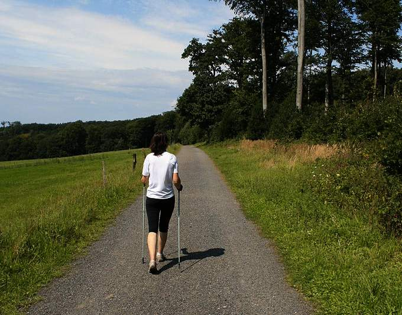

Cholesterols are chemicals in the blood that help our cells make essential hormones.
Eating an excess of fatty foods increases our chances of having too much bad cholesterol; this increases our risk of heart disease (OCR; see Section 3.3).
Exercise for health
Exercise helps us to keep healthy by using energy, building muscle mass and raising our metabolic rate.
Regular exercise reduces our overall levels of blood cholesterol and helps us to maintain an ideal weight.
When we exercise our good cholesterol increases and our bad cholesterol decreases.
Our heart also strengthens with exercise: it can pump the same amount of blood around the body with fewer beats per minute (see ‘heart rate’, Section 3.3).
 Nordic walking with poles is a good form of moderate exercise
Inherited factors
Inherited factors in our bodies include the proportion of muscle to fat, and our metabolic rate.
Our livers produce cholesterol from the fat we eat; the balance of good and bad cholesterol produced is inherited.
A very small proportion of the population has high bad cholesterol no matter what they eat; this is an inherited problem.